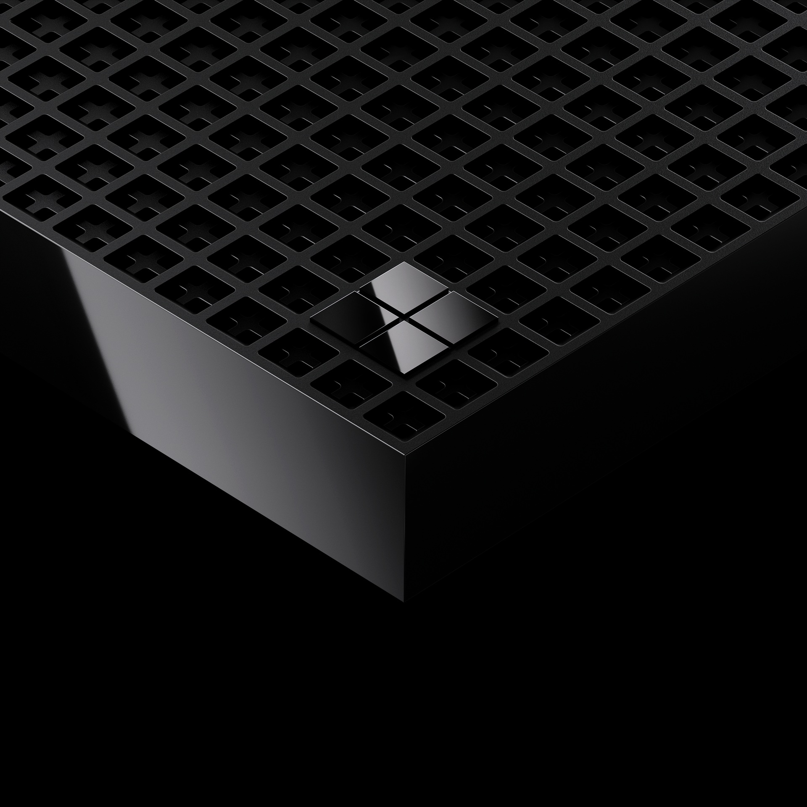

Microsoft Surface RTX Spark Dev Box
Microsoft 在 Build 2026 发布 Surface RTX Spark Dev Box，这是 Surface 产品线面向 AI 开发者的紧凑型桌面电脑，搭载 NVIDIA RTX Spark superchip、128GB 统一内存，并预装开发者优化的 Windows 11 Pro 环境。
- 为什么纳入：这是一个完整桌面设备，有明确发布节点和后续销售路径，面向需要本地运行、微调和测试模型的开发者与企业团队。
- 核心能力：Microsoft 称其可提供最高 1 petaflop AI 计算能力，可在本地运行 120B+ 参数模型与长上下文推理，并支持 WSL 2 GPU passthrough、CUDA、VS Code、GitHub Copilot、Python 和 Node.js。
- 销售状态：官方称今年晚些时候在美国通过 Microsoft.com 独家销售；价格尚未披露，产品仍受监管认证与上市条件约束。
- 分类判断：企业消费者 / 开发者硬件。它是终端设备，不是单独芯片、服务器机架或云服务。
来源：Microsoft Devices Blog、Windows Developer Blog、Reuters 经 The Spokesman-Review